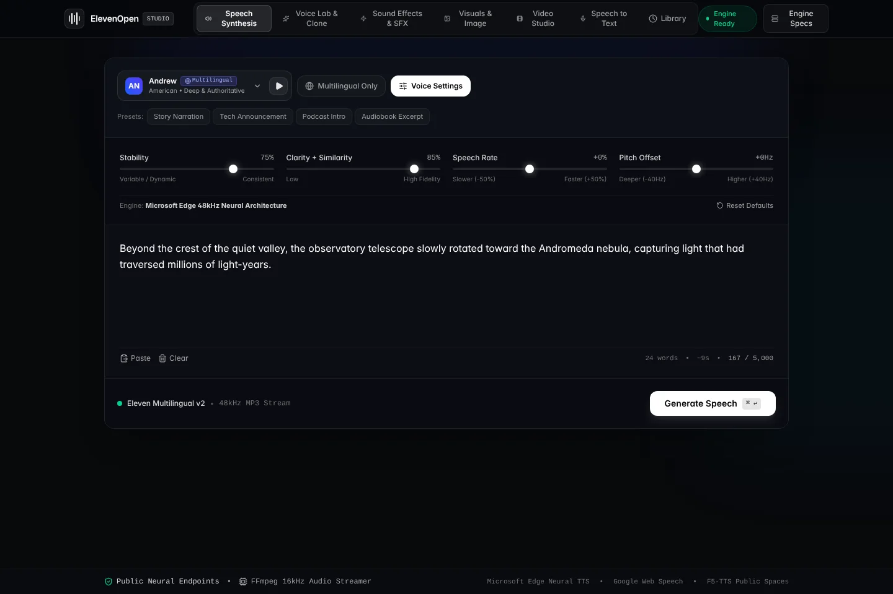

Open source · MIT · Runs on your computer
Speech, sound, images and short clips, all in one place.
ElevenOpen Studio is a web app that brings text-to-speech, voice matching, sound effects, images, video and transcription together. It uses free public services, so you can start without an account or a paid API key.

Pick a Microsoft Edge voice, set speed, pitch and volume, and download the result as an MP3.
What works well
The parts the app does on its own, with no setup beyond the install.
- Runs on your machine. Your history is kept in your browser, not on a server.
- No account to start. No paid API key is needed for the core features.
- Sound effects work offline. The built-in synthesizer needs no internet connection.
- It says how a result was made. If a fallback was used, a note tells you which one and why.
- Easy to inspect. A plain Express server, one Python engine, and 97 automated tests.
Good to know
Free services come with trade-offs. A few things to expect.
- Speech, transcription and images need internet. They use Microsoft, Google and Pollinations.
- Voice match uses stock voices. For true cloning, add a free Hugging Face token.
- The built-in sound synthesizer is simple. It reacts to words like knock, punch, footsteps, laser and rain. A token unlocks the neural models.
- Free video queues can be busy. When they are, you get an image cross-dissolve instead, clearly labelled.
- Clips are short. Video runs 2 to 10 seconds.
Run it yourself
You need Node.js 18 or newer, Python 3.10 or newer, and FFmpeg on your PATH.
When it starts, open http://127.0.0.1:3000. A badge in the header tells you if anything is missing. More detail is in the README.
git clone https://github.com/Nurik-dz/open-access-audio.git
cd open-access-audio
pip install -r requirements.txt
npm install
npm run dev